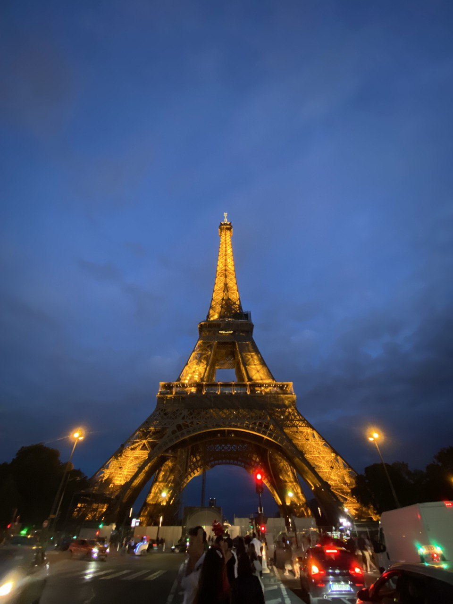
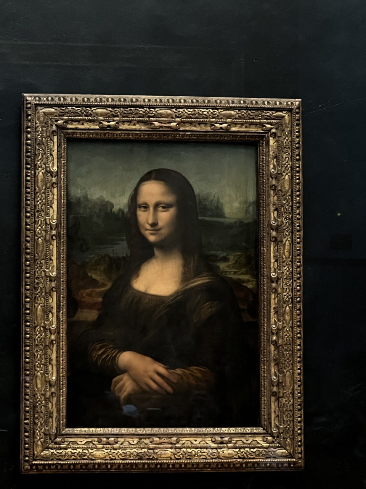
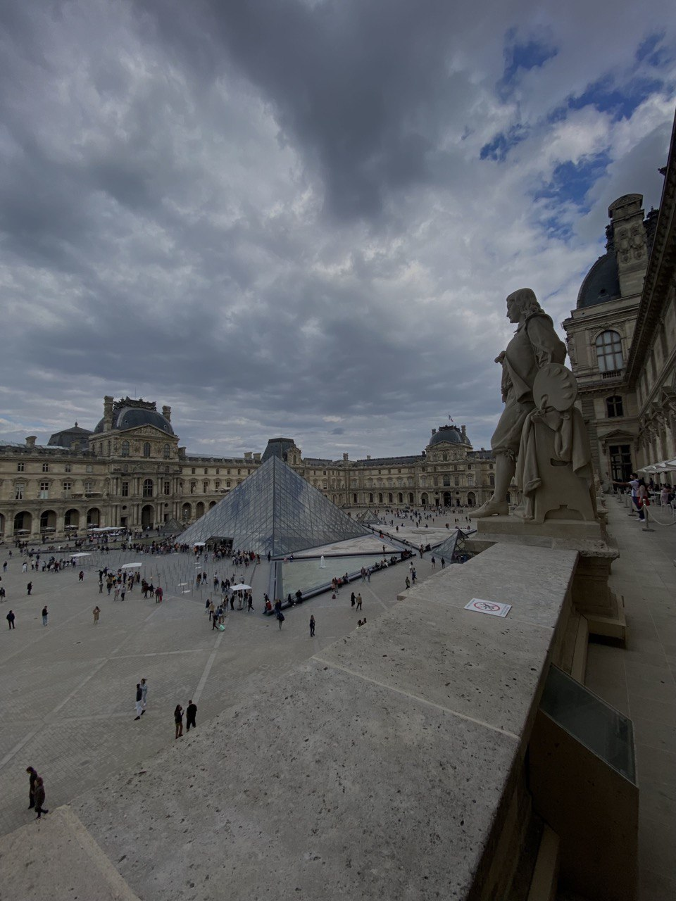

As a student, my travels had to be budget-friendly and low-cost, so I used a few life hacks to save money and time. We all know the most popular industrial attraction in Paris - the Eifell Tower. The climb to which costs 25 euros for an adult, but if you use the function “people under 25 years old living in Europe”, then the entrance to the tower will be free for you. If you do not have a document confirming your residence in the territory of Europe, but you have a student ID, the entrance will cost you only 10 euros. In the same way you can save your money by coming to the Arc de Triomphe. While if you want to come to Paris in September and get to the period of 18-22, then the entrance to these attractions will be free for everyone.
My travel experience


Now let's move on to the second most famous and beautiful prehistory as the Louvre Museum. A huge number of tourists come to this museum every day and the queues are huge. Based on experience between 13:00 and 15:00, queues are reduced by 50 percent according to how many people have lunch. Moreover, after the first half of the day, people get tired, as many come with children and take a break. Also in the Louvre there is a secret passage located on the side of the Lion's Gate on the south side of the museum - through which you will get to the museum 2 times faster, do not stand in a huge queue of tourists who do not know about the secret entrance.

MY CONTACTS
The Seine River will be in the top of the best places to visit, many ferries, boats, yachts, etc. go along this river. The fare for which costs from 15 euros and can reach up to 100 euros for a VIP seat and a table with French wine and gourmet snails. Walk service center «Vedettes de Paris» gives you the opportunity to travel for free on your birthday, moreover, you will be provided with a glass of champagne. Paris is a city of money and love, in my personal opinion - therefore, in order to enjoy the city to the fullest and save your money at least by a certain percentage, be sure to carry your ID with you to get discounts and take your soulmates to fully experience the romance and magic of this city.